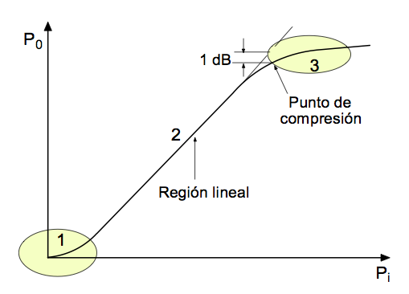
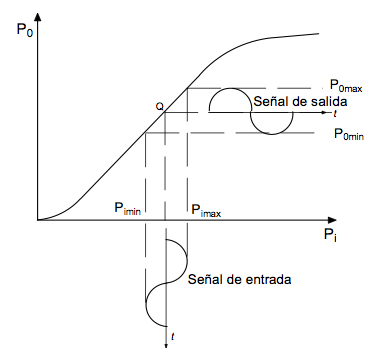
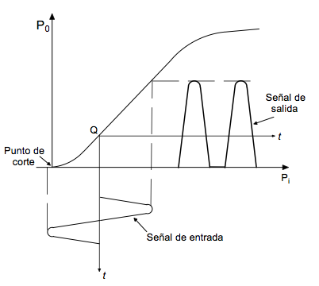
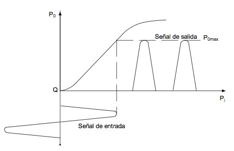
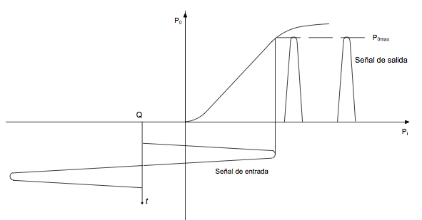

Amplificadors
Els amplificadors són indispensables en qualsevol sistema de comunicacions, igual que els filtres, els oscil·ladors, els mescladors, etc. En el cas d'un transmisor la senyal d'entrada és d'uns pocs miliwatts i cal que subministri a la antena un senyal de diversos Kw, és evident que la senyal s'ha d'amplificar fins a aconseguir el nivell de potència de sortida requerit. En un receptor al qual l'antena lliura una senyal de l'ordre de picowatts (10-12 w), s'ha de produir una senyal de sortida amb potència suficient per excitar, per exemple a un altaveu, també és indispensable per tant amplificar el senyal diversos ordres de magnitud. En principi, els amplificadors han de complir la condició de transmissió sense distorsió, almenys en la banda de pas d'interés i, per conseqüència, han de ser lineals en el sentit que només poden modificar l'amplitud del senyal sense canviar la seva forma d'ona. Això últim, en general, és aplicable, si bé amb matisos, als sistemes analògics però no necessàriament als sistemes digitals.
La funció principal de qualsevol amplificador és augmentar el nivell de voltatge, corrent o potència d'una senyal d'entrada, convertint la potència subministrada per una font d'alimentació en potència útil de senyal a la sortida. La relació entre aquesta potència útil i la potència subministrada per la font es defineix com eficiència de l'amplificador. L'energia de la font no convertida en senyal util es perd en forma de calor i per això, cal extreure d'alguna manera la calor generada que, d'una altra manera, faria augmentar la temperatura dels components electrònics de l'amplificador fins a destruir o danyar permanentment . Aquest és un aspecte de gran importància en el disseny de, pràcticament, qualsevol circuit electrònic.
Classificació dels amplificadors
Els amplificadors poden classificar-se de diverses formes: la primera, segons el nivell de senyal amb el que treballen, en amplificadors de petita senyal o de senyal gran o gran senyal. Als primers també se'ls designa com a amplificadors de voltatge i als segons, com de potència. Evidentment, aquesta designacion resulta ambigua i es complementa indicant si l'amplificador és lineal o no lineal. Un amplificador lineal no distorsiona el senyal, almenys en teoria. Un amplificador no lineal pot o no distorsionar el senyal, depenent de la configuració del circuit que s'utilitzi. La distorsió a la banda d'operació pot donar-se en amplitud, en fase o, més generalment, en ambdues. Tradicionalment es classifica als amplificadors en classes, les mes usuals, A, B i C. Intentarem aclarir això fent ús de la característica de transferència, que no s'ha de confondre aquí amb la funció de transferència.
Una manera de definir la característica de transferència és relacionant el voltatge, el corrent o la potència de sortida, amb el voltatge, corrent o potència d'entrada. Utilitzarem aquí la potència i així, es pot representar aquesta relació mitjançant la gràfica de la figura següent:

Figura 1: Característica de transferència
En el cas més general, per senyals molt petites (regió 1), la potència de sortida no és directament proporcional a la d'entrada, la relació entre elles no és lineal i la forma d'ona de la senyal de sortida no serà exactament igual a la d'entrada. En molts dels dispositius amplificadors actuals aquesta regio és molt petita i en la pràctica pot ignorar si no és significativa. D'altra banda la regió 3, a la dreta, tampoc és lineal i s'aconsegueix quan el dispositiu amplificador no és capaç de subministrar més potència de sortida per molt que augmenti la potència de la senyal d'entrada. Quan el nivell de potència de sortida es desvia 1dB (0,7943 en escala lineal) per sota del que hauria de tenir si la característica fos lineal, es designa com a punt de compressió i es considera com el punt a partir del qual la distorsió de la senyal de sortida respecte a la d'entrada comença a ser apreciable. La regió 2, intermèdia, és la regió lineal.
Funcionament en classe A
En un amplificador funcionant en classe A, hi ha senyal de sortida durant tot el cicle de la senyal d'entrada, és a dir, el dispositiu amplificador condueix durant 360 graus elèctrics. Això es mostra a la figura 2, on en l'eix vertical s'il·lustra el senyal d'entrada i en l'horitzontal la de sortida. Es suposa, per a aquest exemple que l'amplificador no és inversor, és a dir, els senyals d'entrada i sortida estan en fase.

Figura 2: Funcionament en classe A
En general, en classe A es procura que el dispositiu operi a la regió lineal, prou lluny dels punts de tall i saturació com per evitar la distorsió. L'amplificació en classe A proporciona la màxima linealitat i guany, però la seva eficiència és baixa. En teoria l'eficiència màxima pot arribar al 50%. A la pràctica, l'usual és que sigui de l'ordre del 20% o fins i tot menor.
Funcionament en classe AB
El angle de conducció, en aquest cas és major de 180o i menor de 360, com es mostra a la figura 3. Això vol dir que el punt de polarització, Q, del dispositiu actiu de l'amplificador s'ajusta de manera que el corrent no flueixi durant tot el cicle, però si durant més de la meitat d'aquest.
És clar que la senyal de sortida està distorsionada. No obstant això es poden aconseguir amplificadors lineals en classe AB amb circuits configurats de manera simetrica o en push-pull, en què s'utilitzen dos dispositius connectats en aquesta configuració. Això obliga que s'han de subministrar 2 senyals a l'entrada del amplificador push-pull, de fet, la mateixa senyal, defasada 180 a cada amplificador.

Figura 3: Funcionament en classe AB
L'eficiència dels amplificadors classe AB pot arribar en la pràctica a valors de l'ordre de 60%, el que és considerablement major que en el cas del classe A.
Funcionament en classe B
En els amplificadors classe B, l'angle de conducció és exactament igual a 180 graus elèctrics, el que significa que el dispositiu actiu d'amplificació està polaritzat al seu voltatge de tall. El corrent de sortida flueix només durant mig cicle de la senyal d'entrada. En aquestes condicions, es poden aconseguir a la pràctica, eficiències fins d'un 65%. Aquest tipus d'amplificadors s'empra extensament en els amplificadors sintonitzats de potència en transmissors. A la figura 4 s'il·lustra la forma de conducció en els amplificadors classe B. La senyal de sortida d'un amplificador classe B on la càrrega fora purament resistiva, és similar a la que es té en un rectificador de mitja ona.

Figura 4: Funcionament en classe B.
Funcionament en classe C
En el funcionament a classe C, el punt de polarització o funcionament aquesta més enllà del punt de tall del dispositiu, de manera que aquest condueix durant menys de mig cicle (<180 º).

Figura 5: Funcionament en classe C
Altres classes d'amplificadors
A més de les classes anteriors, hi ha amplificadors treballen en forma commutada i que es classifiquen en classes D a H que no es tracten aquí. La seva característica principal és l'elevada eficiència que s'aconsegueix i troben nombroses aplicacions en circuits d'àudio i RF per reduir els requisits de les fonts d'alimentació i reduir la dissipació tèrmica. En general, aquestes classes d'amplificadors requereixen dissenys relativament sofisticats, especialment a nivells alts de potència.
La classe de funcionament d'un amplificador és independent del dispositiu actiu utilitzat. Com pot inferir de la discussió anterior, la classe de funcionament està determinada pel punt d'operació del dispositiu i les característiques de la senyal.
Si bé l'anàlisi d'un circuit amplificador pot considerar relativament simple, el seu disseny pot resultar complex en intervenir altres consideracions com les següents:
- Guany de voltatge, corrent i potència.
- Impedància d'entrada.
- Impedància de sortida.
- Resposta en freqüència
- Requisits d'alimentació.
- dissipació tèrmica.
- Fiabilitat.
- Altres factors, com característiques mecàniques, etc.